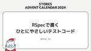
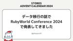
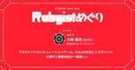
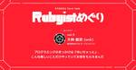
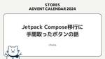
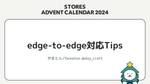

STORES Product Blog
https://product.st.inc/
こだわりを持ったお商売を支える「STORES」のテクノロジー部門のメンバーによるブログです。
フィード

RSpec で書くひとにやさしいテストコード 1
1
STORES Product Blog
こんにちは。 STORES ネットショップ の開発をしている、hsm_hx です。 この記事は STORES Product Blog Advent Calendar 2024 8日目 の記事です。 わたしと RSpec STORES ネットショップ チームでは、ネットショップの注文データを保存するために作られたモデルを POS レジ などのデータを保存できるように拡張された新しい注文モデルにリプレースする大きなプロジェクトを進めています。 このプロジェクトについては phayacell さんのこちらの記事でも扱われているので、興味のある方はお読みください！ product.st.inc そし…
9時間前

データ移行の話で RubyWorld Conference 2024 で発表してきました
STORES Product Blog
テクノロジー部門リテール GTM B グループの @phayacell と申します。 RubyWorld Conference で発表してきましたので、その報告投稿としての STORES Advent Calendar 2024 7日目の記事です。 どんな発表してきたの？ 以下の発表をしてきました。 speakerdeck.com Ruby を書くのって、たのしいですよね。 Ruby で書かれているサービス開発って、たのしいですよね。 そんな Ruby のサービスは、できる限り長く続けたいですよね。 これは、長年運用してきた Ruby のサービスを、今後も長く続けていくためにやったお仕事の話で…
1日前

マネジメントはシミュレーションゲーム、Rubyのお気に入りポイント、仕事だと障害対応が一番楽しい【Rubyistめぐりvol.5 onkさん 後編】 15
STORES Product Blog
Rubyist Hotlinksにインスパイアされて始まったイベント『Rubyistめぐり』。第5回はonkさんをゲストに迎えて、お話を聞きました。こちらは後編です。（前編はこちら） hey.connpass.com 最先端で障害対応ができる自負がある 藤村：最近はどんなことしてるんですか？ onk：最近はマネージャーをやっております。仕事では手を動かしてないですね。 藤村：主な関心ごと、主な時間を使っているところってどういうことですか？ onk：定例ミーティングと1on1でほぼ全ての時間が消えていくので、主な関心ごとは見ている全てのプロジェクトが破綻しないことですね。カレンダーがテトリスにな…
2日前

プログラミングのきっかけは『ゆいちゃっと』、こんな楽しいことだけやっていてお金をもらえるんだ【Rubyistめぐりvol.5 onkさん 前編】 53
STORES Product Blog
Rubyist Hotlinksにインスパイアされて始まったイベント『Rubyistめぐり』。第5回はonkさんをゲストに迎えて、お話を聞きました。こちらは前編です。 hey.connpass.com 漫画禁止、ひたすら本を読む小学生時代 藤村：今回はonkさんに来ていただきました。よろしくお願いします。 Rubyistめぐりの趣旨を改めて説明すると、Rubyist Magazineというメディアに『Rubyist Hotlinks』という記事があって、いわゆるRubyistの人たちの生い立ちから仕事、プログラミングなどいろんな話を聞くコンテンツで、僕は駆け出しのエンジニアの頃にそれをすごく読…
2日前
K2移行、やるぞ！
STORES Product Blog
こんにちは。STORES 決済 でAndroidエンジニアをしているn-sekiです。 つい最近まで暖かな気候で「今年は紅葉が遅いなぁ」なんて思っていましたが、気がつくと師走です。困ったものですね。 今回はK2移行について書こうと思います。 なお、この記事は STORES アドベントカレンダーの5日目の記事です。 K2 JetBrainsがKotlinの新たなコンパイラを開発しており、「K2」というコードネームで呼ばれていたことはAndroidエンジニアのみなさんには周知の事実でしょう。 Kotlin2.0より前のバージョンではデフォルトでは以前のコンパイラが利用されるため、K2を使うには設定…
5日前

Jetpack Compose移行に手間取ったボタンの話
STORES Product Blog
はじめに こんにちは！ STORES 決済 のAndroidアプリを開発しているchukaです。 こちらはSTORES Advent Calendar 2024 4日目の記事です。 突然ですが、みなさんボタンは好きですか？ Material3の公式ドキュメントを覗いてみると、そこには9種類ものボタンが紹介されていました。 一口にボタンと言っても、その目的や用途によって様々なデザインのものがあるかと思います。 Material3で紹介されているボタンたち STORES 決済 Androidチームでは、Android ViewからJetpack Composeへの移行に絶賛取り組んでいる最中です。…
6日前

edge-to-edge対応Tips 2
STORES Product Blog
最近やったDIYは二重窓です。余っていた配線カバーを窓枠の上下に両面テープで固定して、表面にアルミシートを貼って断熱性を増したプラダンをはめこみました。リモートワーク環境が窓の真横で寒かったので、かなり改善されました。 こんにちは。 STORES 決済 でAndroidアプリエンジニアをしている Yamaton です。これは STORES アドベントカレンダーの３日目の記事です。さて、今回はAndroid15で突如導入された edge-to-edge について、対応した際のTipsを共有します。 Android 15 変更点のリスト公開 GoogleからAndroid 15に関する 変更点のリ…
7日前

OpenID Connect Session Management について
STORES Product Blog
概要 nannany です。 この記事ではOpenID Connect Session Managementについての説明と、実際にサンプルを実装して得た気づきを記述しました。 Authorization Code Grantがどのようなフローで行われるかなど、OIDCのベースとなる説明は割愛しています。 OpenID Connect Session Management とは？ OpenID Connect Session Management は OpenID Foundation が定めた仕様の1つです。 openid.net 仕様書のうち、その内容を端的に表している箇所が下記になります…
9日前
STORES全体の技術課題の意思決定をするSystem Design Meetingについて
STORES Product Blog
こんにちは、うしろのこです。STORES アドベントカレンダーの1日目ということで、本当は別の内容を書く予定だったんですがリリースの都合などもあり、今回は STORES における System Design Meeting という会議体について書こうと思います。 System Design Meeting とは System Design Meeting は、STORES 全体に関わるような技術的な課題について議論し、意思決定をする場です。ミーティングのオーナーはCTOが担当し、基本的には持ち込みで技術課題を共有して全体の方針決めから実行までの合意を取ることになります。 誰でも参加可能かつ誰で…
9日前
SECCON CTF 13 予選を開催しました (スコアサーバー編)
STORES Product Blog
STORES 株式会社 技術基盤グループの id:atpons です。2024/11/23 〜 2024/11/24 にかけて、SECCON CTF 13 予選 のスコアサーバーの構築、運用を行いました。今回はその活動についてご紹介します。 SECCON について SECCON は日本の情報セキュリティコンテストイベントです。日本においては大きな CTF 競技とされています。 id:atpons は SECCON 実行委員 (LifeMemoryTeam) という有志の団体のメンバーとして、インフラ周りの整備 / NOC (ネットワーク) を 2019 年から行っています。SECCON はコン…
12日前
IT 管理者が MacBook のバッテリー状態を知るためにやったこと
STORES Product Blog
こんにちは、 STORES でコーポレートエンジニアをしている佐々木です。 コーポレートエンジニア が所属する IT 本部は、人事や労務といったいわゆるバックオフィスの部署と同じ PX 本部の中にあります。 PX は People Experience の略で、プロダクト開発がユーザー体験を重視するように、 STORES で働いている人は自分たちにとってのユーザーであるという考え方を表しています。 私が所属する IT本部 コーポレートエンジニアリンググループは、デバイス管理、オフィスネットワーク、SaaSの活用、社内ツールの開発など、全社横断的な課題をエンジニアリングで改善する事を目標にしてい…
13日前
チームで定期的なプロダクト監視の取り組みをしている話
STORES Product Blog
はじめに STORESでエンジニアをしているtommyです。 直近は、STORES レジ というプロダクトの開発に携わっています。 STORES レジ を開発しているPOSレジグループは、今年のはじめにできた組織です。 新しい組織には元々レジアプリに関わったことがないメンバーもおり、プロダクトへの理解度がバラバラな状態でした。 そのため、これからチームで運用していくためにも、まずはプロダクトの健康状態を把握していきたいという話をしていました。 そこで、この記事ではチームで行っているプロダクト監視の取り組みを紹介します。 Datadog での Dashboard の作成 前述の状態からチームを作…
14日前
GraphQL のスキーマ更新を自動化する
STORES Product Blog
GraphQL のスキーマ更新を自動化する こんにちは！ STORES でソフトウェアエンジニアをしている @m0nch1 です。 STORES ではいたるところで GraphQL が採用されており、今や STORES のものづくりにおいては欠かせないものになっています。 GraphQL 関連の記事がいくつかあるので抜粋して紹介しておきます。 product.st.inc product.st.inc 今回はタイトルの通り、みんな大好き自動化の話です。 この記事が誰かの作業を少しでも短縮できるといいなと思っています！ 手動でスキーマ同期する（自動化する前） 現在開発しているアプリケーションでは…
15日前
JJUG CCC 2024 Fall に参加しました！
STORES Product Blog
こんにちは！ STORES 決済 のバックエンドエンジニアをしているしまだ（mii）です。 10月27日に開催された JJUG CCC 2024 Fall に参加してきました。STORES からは2名がセッション登壇、1名がLTをしました。 このブログでは、参加したメンバーの感想や印象に残ったセッションを紹介します。 ccc2024fall.java-users.jp 登壇セッション・登壇者コメント Content Security Policy入門: セキュリティ設定と違反レポートのはじめ方 / Yusuke Uehara 資料：https://speakerdeck.com/uskey51…
15日前
RubyConf 2024 参加レポート
STORES Product Blog
こんにちは。2024年11月13日から15日にかけて、アメリカ・シカゴで RubyConf 2024 が開催され STORES からは3名が登壇しました。 ホテル内の立て看板 (photo by ko1) RubyConf はアメリカのタンパで 2001 年から開催されているシリーズとしては最も長い Ruby 関連カンファレンスです。今年はシカゴの Hilton ホテル（ミシガン湖の隣）で3日間開催されました。参加人数は600人ほどの規模とのことで、今年初めて来たという人も結構いたようです。 今年の RubyConf は、2日目がワークショップや Hack Day の日、ということで、いつもと…
16日前
graphql-ruby エラーの設計と実装
STORES Product Blog
yubrot です。2024年11月14日に、STORES.rb Railsのはなしというイベントでgraphql-ruby エラーの設計と実装について話しました。内容がブログ記事向きだろうということで、ブログで改めて解説したいと思います。 本記事で取り上げているコードを含めた、graphql-rubyによるGraphQL サーバの実装例をyubrot/graphql-ruby-exampleで公開しています。こちらも合わせてご参照ください。 STORES とGraphQL STORES はプロダクト間のやりとりにGraphQLによるAPI通信を多用しています。社内を見渡すと、GraphQLを…
19日前
ストアーズはECの会社、ではなくこんな開発をしています
STORES Product Blog
STORES でエンジニアリングマネージャーをしている morihirok です。 ストアーズはECの会社、ではない でも話したとおり、今でも STORES は EC の会社として認知されていることが多いです。 その誤解を解くべく、2024年1月にリリースされた 「予約システムと、ひとつになったPOSレジ」 の開発について紹介しながら、これから STORES がどんなものを開発していきたいのかお伝えできればと思います。 note.com STORES は複数のスタートアップが合併してできた会社である 具体的な開発の話をする前に、実は STORES は複数のスタートアップが合併してできた会社だと…
22日前
Go と GraphQLで作る組織管理基盤
STORES Product Blog
こんにちは。プロダクト基盤グループの inari111 です。STORES の各プロダクトへ導入する共通基盤を開発しています。 私の部署内で2つ目の基盤プロダクトとなる組織管理基盤を作ったのでご紹介します。 社内では「maja（マヤ）」と呼ばれています。 この記事では maja の Go アプリケーション部分について説明します。 maja とは 事業者、店舗、従業員、従業員の権限を管理する基盤プロダクトです。 各プロダクトがそれぞれ実装していた事業者や従業員といったデータを集約していくために maja を作ることになりました。 maja を作ることになった詳しい経緯はこちらの記事をご覧ください…
23日前
STORES Advent Calendar 2024 #STORESアドカレ
STORES Product Blog
今年もアドベントカレンダーの時期がやってきました！ 去年はかなりフライングしていましたが、今年は暦通り？やっていきます。 更新はXでもお知らせしますので、Xもフォローいただけると嬉しいです！ https://twitter.com/storesinc_tech カレンダー 各記事へのリンクは随時更新します。 投稿日 執筆者名 タイトル 12月2日 ushironoko STORES全体の技術課題の意思決定をするSystem Design Meetingについて 12月3日 morihirok Real World 福岡から STORES で働く 12月4日 yamaton edge-to-ed…
23日前
STORES レジ ~ iOSインターン 体験記 ~
STORES Product Blog
前座 始めまして，ちゃんくろです。 普段は大学に通いながらiOSエンジニアとしてインターンに参加させていただいたり，IT系学生団体Tech.Uniの運営をさせていただいたりしている中で2024年春のサポーターズ1on1できっかけをいただき，10月中旬から11月中旬にかけて STORES レジでiOSインターンをさせていただくことになりました。 そこで学んだことや取り組み。僕自身1ヶ月のSTORESでのインターンを通して得たことを書いていければと思います。 期間中の取り組み 期間中に取り組んだTaskとしては以下のものが挙げられます。 レジ七不思議 会計後の顧客検索条件のリセット カート内キーボ…
1ヶ月前
STORES Tech Conf 2024 "New Engineering"の映像制作の裏側【ep.32 #論より動くもの .fm】
STORES Product Blog
CTO 藤村がホストするPodcast、論より動くもの.fmの第32回を公開しました。今回はSTORES Tech Conf 2024 New Engineeringのデザインを担当した遠藤と音楽を担当したykpythemind（以下、ykpy）と話しました。 podcasters.spotify.com 論より動くもの.fmはSpotifyとApple Podcastで配信しています。フォローしていただくと、新エピソード公開時には自動で配信されますので、ぜひフォローしてください。 キービジュアルがカンファレンスをリードしていった 藤村：こんにちは、論より動くもの.fmです。 論より動くもの.…
1ヶ月前
GitHub OrganizationのSAML認証とSCIM統合を設定しました
STORES Product Blog
こんにちは、コーポレートエンジニアの伊藤(ito2)です。PX部門 IT本部 コーポレートエンジニアリンググループに所属しています。 PXは、人事、採用、労務、広報、社内ITからなる部門で、人事はプロダクト開発と同じ、従業員と考えるのではなく、ユーザーと捉えようという考えから「People Experience(PX)」と名乗っています。社内ITについても同じ文脈で活動しており、ユーザー体験を重視するメンバーが集まっています。 コーポレートエンジニアリンググループでは、デバイス、ネットワーク、SaaS活用、社内アプリケーション開発など、各々の強みを活かして、エンジニアリングの力で社内の課題に日…
1ヶ月前
Kaigi on Rails 2024 参加レポート
STORES Product Blog
Kaigi on Rails 2024、お疲れさまでした！STORES からは18名（＋託児サポートとして4名）で参加、hogelogがランチタイムにワークショップをしたり、ykpythemindが登壇しました！ ゴールドスポンサーとして託児サポートを提供したり、女性Rubyist向けのランチイベントとしてSTORES CAFE for Women at Kaigi on Rails 2024も開催しました。 このブログでは、参加した各位が印象に残ったセッションについて感想を述べます。 印象に残ったセッション hogelog Rackを理解しRailsアプリケーション開発の足腰を鍛えよう 自分…
1ヶ月前
Railsのテストコードで使われているNamed Routesを実行時に文字列に直した話
STORES Product Blog
CTOの藤村です。最近はぜんぜんRailsを書いていません。ふとSuggestion: Use string literals instead of named routes or URL helpers in tests · Issue #328 · rubocop/rails-style-guideというIssueを見て、2年ほど前にやったことを思い出したので、今更ながらブログを書くことにしました。 テストコードはNamed Routesを使うべきではない？ Railsでは routes.rb で定義されたアクションへのパスやURLを出力するヘルパーが用意されています。posts_path…
1ヶ月前
STORES レジ の長年の負債を宣言的UIのエッセンスを取り入れて改善してみた
STORES Product Blog
POSレジグループで STORES レジ という製品の開発をしている片桐といいます。今年の2月から、POSレジグループにサーバーサイドエンジニアとして参加したのですが、現在はサーバーサイドの開発と並行してアプリの開発にも参加しています1。 STORES レジ は、iPad で利用できるPOSレジアプリです。STORES の中では比較的あたらしいプロダクトですが、人員や時間の限られる中生き残ってきたプロダクトの1つではあるので、相応に負債となってしまっている部分もあります。その1つとして「カスタマーディスプレイ」という機能がありました。今回、機能開発と並行してカスタマーディスプレイの負債を解消で…
1ヶ月前
カンファレンス司会を支える技術
STORES Product Blog
はじめに こんにちは @tomorrowkey です。 先日STORESでは初のテックカンファレンスである New Engineering を開催いたしました。 たくさんの社員が登壇者やスタッフなどの関わり方をしていたのですが、そのなかでも私は司会を拝命いたしました。 そんな大役が私でいいの？と思いましたが、ご指名いただいたからには全力でやるぞ！ってことで、司会としてどういった準備をして当日どうだったのか記録を残しておきたいと思います。 私の経験値 まず、これまでの私の経験値についてですが、次のとおりです。 勉強会での司会の経験がある 小さい規模のコミュニティ運営の経験がある いわゆる大きい規…
1ヶ月前
大阪Ruby会議04に参加しました
STORES Product Blog
こんにちは。STORES 予約 の開発をしているima1zumiです。夏も終わり秋も深まる季節になってしまいましたが、8/24に開催された大阪Ruby会議04という地域Ruby会議*1に参加したのでレポートします。 会場は中之島フェスティバルタワーでした。ビル1FにGLITCH COFFEE OSAKAがあったりカンファレンスホールと同じフロアに美術館があったりとオシャレな空間でした。 Keynote: 最高の構文木の設計 2024年版 speakerdeck.com LSPやRuboCopのユースケースから考えるとRubyが提供する構文木にTriviaと呼ばれる付加情報をくっつけたほうがいい…
1ヶ月前
Vue Fes Japan 2024に参加しました！みんなの感想ブログ
STORES Product Blog
こんにちは！最近めっきり寒くなり冬服を出してきた yasanori です。 ここ数年は秋服の出番がドラゴンボール後半のヤムチャぐらい少なくなってきていますね。 ヤムチャ素敵ですよね。 天下一武道会では一回戦で負け、サイバイマンにも負けてしまうなど、かませ犬的なイメージが強いですが、それでも彼の人当たりの良さや周囲への気配りといった「人間力」の高さが随所で感じられます。 自分もヤムチャのような存在になりたいものです。 本題へ！Vue Fes Japan 2024 お疲れ様でした！ STORES はゴールドスポンサーとしてブースを出したり、託児サポートを提供したり、登壇者がいたりと、濃密な1日を過…
2ヶ月前
UnitTest合宿の日々に思いを馳せる
STORES Product Blog
はじめに こんにちは。STORES 決済 でAndroidエンジニアをしている id:n-seki です。 最近は気温の乱高下が激しく、寒暖差で体がバグりそうですね。 さて、今日はUnitTest合宿の話をしようと思います。 UnitTest合宿とは......？ はい、そうですよね。突然「合宿」と言われても戸惑うと思います。 私の提案を聞いたチームメンバーも同じ気持ちだったかもしれません。 私たち決済AndroidチームのメンバーはそれぞれがUnitTestについて課題感を持っていました。 UnitTestをあまり書いたことがないので、いざ書こうとすると何をテストすればよいか悩んでしまう U…
2ヶ月前
Kaigi on Rails 2024に STORES から2名が登壇、ゴールドスポンサーとして託児所運営をします＆STORES.rb 開催のお知らせ
STORES Product Blog
こんにちは、技術広報のえんじぇるです。 STORES は10月25日・26日に開催されるKaigi on Rails 2024にゴールドスポンサーとして協賛し、託児所運営をします。また、2名が登壇します！ この記事では、 当日登壇するメンバーと、 スポンサーとしての STORES について紹介します。 登壇者の紹介 『Rackを理解しRailsアプリケーション開発の足腰を鍛えよう』 Workshop | Kaigi on Rails 2024 hogelogが、Day 1とDay 2のワークショップを担当します。（ワークショップの申し込みは定員数に達したため、クローズされました）お申し込みいた…
2ヶ月前